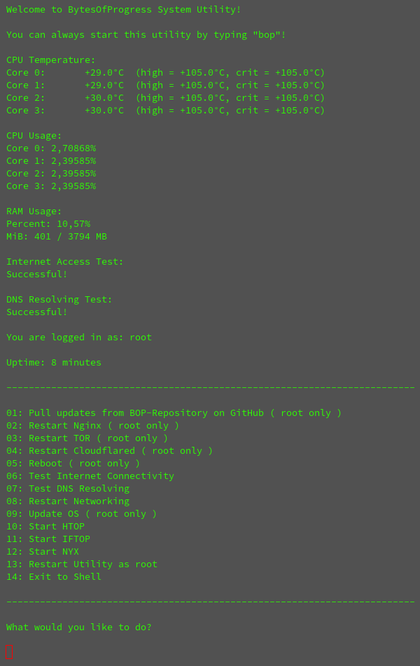

BytesOfProgress
Server Maintenance Script
20th April 2024 / 11:45 PM
I wrote a small script to make maintaining the BOP webserver way simpler.
It automatically starts up whenever an SSH connection is established to the server. It will then print some statistics like CPU temperature, CPU usage, RAM usage and internet connectivity.
This is what is looks like in usage:
Since I will probably change the script later on, you can look at the up-to-date version on GitHub.
Or take a look at the first version right here:
#!/bin/bash
clear
echo 'Welcome to BytesOfProgress System Utility!'
echo
sleep 0.5
echo 'You can always start this utility by typing "bop"!'
echo
sleep 1
#------------------------------------------------------------------------------
echo 'CPU Temperature:'
sensors | grep Core
echo
#------------------------------------------------------------------------------
echo 'CPU Usage:'
grep -E '^cpu[0-9]+ ' /proc/stat | awk 'NR <= 2 {usage=($2+$4)*100/($2+$4+$5+$6)} {print "Core " NR-1 ": " usage "%"}'
echo
#------------------------------------------------------------------------------
echo 'RAM Usage:'
awk '/MemTotal/ {total=$2} /MemAvailable/ {available=$2} END {usage=((total-available)/total)*100; printf "Percent: %.2f%%\n", usage}' /proc/meminfo
awk '/MemTotal/ {total=$2} /MemAvailable/ {available=$2} END {printf "MiB: %d / %d MB\n", (total-available)/1024, total/1024}' /proc/meminfo
echo
#------------------------------------------------------------------------------
echo 'Internet Access Test:'
ping -c 1 1.1.1.1 > /dev/null && echo "Successful!" || echo "Failed!"
echo
#------------------------------------------------------------------------------
echo 'DNS Resolving Test:'
ping -c 1 cloudflare.com > /dev/null && echo "Successful!" || echo "Failed!"
echo
#------------------------------------------------------------------------------
echo "You are logged in as: $(whoami)"
echo
#------------------------------------------------------------------------------
echo "Uptime: $(uptime -p | sed 's/up //')"
echo
#------------------------------------------------------------------------------
echo '-------------------------------------------------------------------------'
echo
#------------------------------------------------------------------------------
echo '01: Pull updates from BOP-Repository on GitHub ( root only )'
echo '02: Restart Nginx ( root only )'
echo '03: Restart TOR ( root only )'
echo '04: Restart Cloudflared ( root only )'
echo '05: Reboot ( root only )'
echo '06: Test Internet Connectivity'
echo '07: Test DNS Resolving'
echo '08: Restart Networking'
echo '09: Update OS ( root only )'
echo '10: Start HTOP'
echo '11: Start IFTOP'
echo '12: Start NYX'
echo '13: Restart Utility as root'
echo '14: Exit to Shell'
echo
echo '-------------------------------------------------------------------------'
echo
#------------------------------------------------------------------------------
echo -e "What would you like to do? \n"
read -r action
#------------------------------------------------------------------------------
if [ "$action" = 1 ]; then
bash /var/www/updates/merge.sh && sleep 3 && bash /var/www/maintenance/BOP-system-util.sh
elif [ "$action" = 2 ]; then
systemctl restart nginx | echo 'DONE' && sleep 3 && bash /var/www/maintenance/BOP-system-util.sh
elif [ "$action" = 3 ]; then
systemctl restart tor | echo 'DONE' && sleep 3 && bash /var/www/maintenance/BOP-system-util.sh
elif [ "$action" = 4 ]; then
systemctl restart cloudflared | echo 'DONE' && sleep 3 && bash /var/www/maintenance/BOP-system-util.sh
elif [ "$action" = 5 ]; then
reboot
elif [ "$action" = 6 ]; then
ping -c 1 1.1.1.1 > /dev/null && echo "Successful!" || echo -e "Failed!\n" && sleep 3 && bash /var/www/maintenance/BOP-system-util.sh
elif [ "$action" = 7 ]; then
ping -c 1 cloudflare.com > /dev/null && echo "Successful!" || echo -e "Failed!\n" && sleep 3 && bash /var/www/maintenance/BOP-system-util.sh
elif [ "$action" = 8 ]; then
systemctl restart networking | echo 'DONE' && sleep 3 && bash /var/www/maintenance/BOP-system-util.sh
elif [ "$action" = 9 ]; then
echo 'Starting Update' && apt update && apt full-upgrade -y && apt autoremove -y && sleep 3 && bash /var/www/maintenance/BOP-system-util.sh
elif [ "$action" = 10 ]; then
htop && bash /var/www/maintenance/BOP-system-util.sh
elif [ "$action" = 11 ]; then
iftop && bash /var/www/maintenance/BOP-system-util.sh
elif [ "$action" = 12 ]; then
nyx && bash /var/www/maintenance/BOP-system-util.sh
elif [ "$action" = 13 ]; then
su -c "/bin/bash /var/www/maintenance/BOP-system-util.sh"
elif [ "$action" = 14 ]; then
bash
else
echo "Invalid Input!" && sleep 3 && bash /var/www/maintenance/BOP-system-util.sh
fi
back